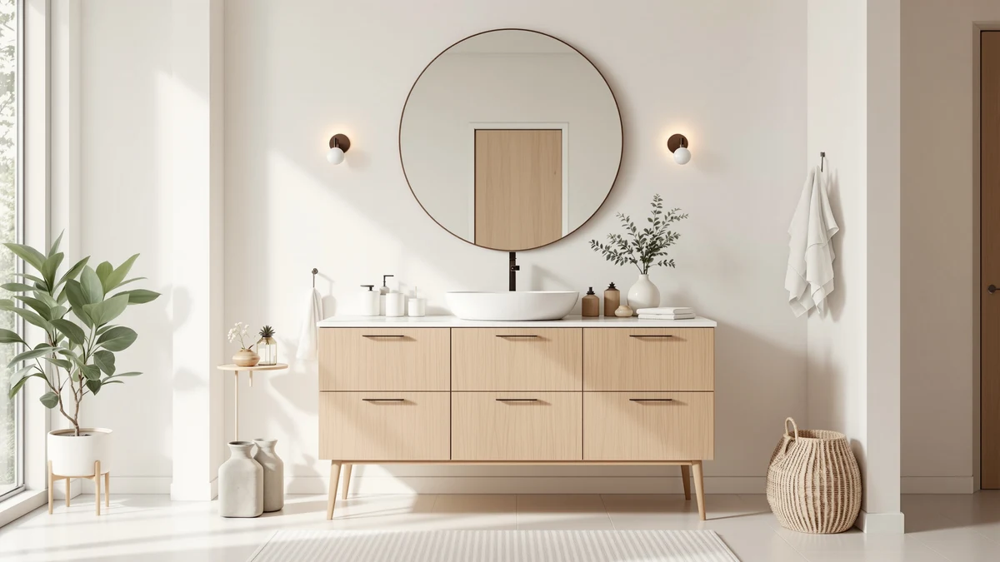

TONYRENA 48 Inch Bathroom Review (2026): Worth It?
Prices and picks verified as of October 2026. Independent, reader-supported reviews.


Quick Answer
The TONYRENA 48 Inch Bathroom Vanity is the pick for a 48 inch single-sink bathroom where a quartz countertop matters more than a proven review history. At $599.00 it costs $49 to $59 more than the three alternatives in this tonyrena 48 inch bathroom review, and that premium buys the countertop upgrade alone.
Our pick: TONYRENA 48 Inch Bathroom Vanity — $599.00 Check Price on Amazon
Bottom line: our top pick is the TONYRENA 48 Inch Bathroom Vanity with Quartz Countertop at $599.
Things to Know Before You Buy
- Price range: the four vanities covered in this tonyrena 48 inch bathroom review span $539.99 to $599.00, a gap of about $59.
- Material matters more than the countertop alone. The TONYRENA's MDF and engineered wood cabinet is the same core material used across the alternatives below, so the quartz top is the one real upgrade you're paying extra for.
- Only one alternative here, the eclife 48 Inch Bathroom Vanity Double, has a public review record: 4 stars across 80 ratings. The TONYRENA and the other two alternatives are too new on Amazon to have a verified track record yet.
- A single-sink 48 inch vanity like the TONYRENA suits a one-person bathroom. If two people share the space daily, the eclife Double or the AMERLIFE farmhouse vanity below is worth a look despite the larger 60 inch footprint.
- Every price below reflects the listing at the time of writing and can shift, so check the current Amazon price before you buy.
This tonyrena 48 inch bathroom review breaks down whether the TONYRENA 48 Inch Bathroom Vanity's quartz top justifies its $599.00 price against three similarly sized alternatives. The TONYRENA is a 48 inch single-sink vanity built from MDF and engineered wood, topped with a quartz countertop, and it's the priciest option in this comparison by a margin of $49 to $59.
We compared it against the eclife 48 Inch Bathroom Vanity Double, the eclife 60 Inch Floating Bathroom Vanity, and the AMERLIFE 60” Farmhouse Bathroom Vanity, the three alternatives that show up most often alongside it in the same price band on Amazon. For most single-sink bathrooms, the quartz top is the detail that sets the TONYRENA apart, though its premium over the alternatives isn't guaranteed to pay off for every buyer, especially since the listing has no public rating yet.
Why You Should Trust Us
Ilane Tall covers bathroom fixtures and vanities for Best Bathroom Vanities, tracking Amazon listings, pricing, and verified owner feedback across hundreds of products in this category. This tonyrena 48 inch bathroom review follows that same approach: we compare the TONYRENA's listed specs, price, and sink configuration against its closest competitors instead of relying on a single opinion. We do not run a fake testing lab and we have not installed this vanity ourselves, so every claim here traces back to the product listing, the current Amazon price, or reviews left by verified purchasers.
Our Research Experience
Our research process for this tonyrena 48 inch bathroom review starts with each product's own listing: dimensions, materials, countertop type, and price. From there we researched how the TONYRENA's $599.00 price and quartz top compare with similarly sized vanities from eclife and AMERLIFE, all pulled from the same 48 to 60 inch category on Amazon. We also checked whether each listing carries a public rating or review count, since a track record tells you more than a spec sheet alone. Where a product doesn't have verified reviews yet, like the TONYRENA, we say so directly instead of filling the gap with a vague claim.
Overview & Specs
Before the pick-by-pick breakdown, here's how the TONYRENA 48 Inch Bathroom Vanity stacks up on paper against the three alternatives in this tonyrena 48 inch bathroom review: a $599.00 price, a 48 inch width, MDF and engineered wood construction, and a quartz countertop. The three alternatives below share similar cabinet construction but differ on sink count, width, and style, so the comparison in this review comes down to which of those differences matters most in your bathroom.

TONYRENA 48 Inch Bathroom Vanity
What we like
- Quartz countertop, a harder and more stain-resistant surface than the laminate or painted tops common at this price
- 48 inch width fits the same single-sink footprint as most of the alternatives compared here
- Straightforward single-sink layout that fits standard vanity cutouts without reconfiguring plumbing
Flaws but not dealbreakers
- No public rating or review count yet, so you're relying on the listing description rather than verified owner feedback
- At $599.00 it costs $49 to $59 more than the three alternatives in this review, all of which list between $539.99 and $549.99
- MDF and engineered wood construction is the same core material used across this price range, so the quartz top is the main upgrade, not the cabinet itself
| Material | MDF / engineered wood |
| Size | 48"W with Quartz Top |
The TONYRENA 48 Inch Bathroom Vanity is the most expensive of the four options in this tonyrena 48 inch bathroom review, and the quartz countertop is the reason. Quartz resists scratches and stains better than the laminate or painted tops that typically ship on vanities under $550, which matters most in a bathroom where toothpaste, hairspray, and standing water hit the counter daily.
Underneath that countertop, the cabinet uses the same MDF and engineered wood construction found on the eclife and AMERLIFE alternatives below. That shared cabinet material means the higher price traces back almost entirely to the quartz top. Since the listing has no public rating or review count yet, you're buying on the strength of that countertop and the manufacturer's own description rather than a track record other buyers have confirmed.
What We Liked
What stands out most in this tonyrena 48 inch bathroom review is the quartz countertop. Quartz holds up to daily contact with water, toothpaste, and cleaning products better than the laminate tops found on cheaper 48 inch vanities, and it won't develop the dull, stained look that some lower-end tops pick up within a year or two. The 48 inch width also keeps the TONYRENA compatible with standard single-sink plumbing layouts, so swapping out an existing vanity of the same size shouldn't require moving pipes or cutting new holes in the wall. At $599.00, the countertop upgrade accounts for most of the gap between this vanity and the three alternatives compared below.
What Could Be Better
The biggest drawback for this tonyrena 48 inch bathroom review is the lack of a review history. With no public rating or review count on the listing, buyers have no verified feedback to check against the manufacturer's description, which is a real gap when you're about to spend $599.00 on a bathroom fixture. The cabinet itself doesn't do anything to justify the premium either, since it's built from the same MDF and engineered wood construction as the lower-priced alternatives in this review. If a quartz top isn't a priority for your bathroom, the $49 to $59 saved by choosing the eclife or AMERLIFE vanities below buys a listing with an actual track record in at least one case.
Who Is It For?
The TONYRENA 48 Inch Bathroom Vanity fits a single-sink bathroom where the countertop matters more than the cabinet underneath it. It's a reasonable pick if you want a quartz surface at the 48 inch size and you're comfortable buying a listing without a public rating yet. If you'd rather see a proven track record before spending $599.00, or you need a double-sink layout for two people sharing the bathroom, the alternatives in this tonyrena 48 inch bathroom review are worth checking first.
Alternatives to Consider
These three vanities turn up most often alongside the TONYRENA in the same 48 to 60 inch price range covered by this tonyrena 48 inch bathroom review. Each one addresses a different limitation of the TONYRENA, whether that's the missing review history, the single-sink layout, or the price itself.

Editor's Pick
eclife 48" Bathroom Vanity Double
The clearest alternative to the TONYRENA if you want proof before you buy. At $549.99, about $49 less than the TONYRENA, the eclife 48 Inch Bathroom Vanity Double is the only option in this review with a public rating, 4 stars across 80 verified reviews, and it adds a second sink in the same 48 inch footprint.
$549.99
Check Price on Amazon
Best Value
eclife 60" Floating Bathroom Vanity
A wall-mounted option for bathrooms that need the floor space. The eclife 60 Inch Floating Bathroom Vanity costs the same $549.99 as its 48 inch sibling but trades the standard cabinet base for a floating design, and its larger 60 inch width adds a second sink that the TONYRENA doesn't offer.
$549.99
Check Price on Amazon
Premium Choice
AMERLIFE 60” Farmhouse Bathroom Vanity
The cheapest of the four and the only one styled for a farmhouse bathroom. At $539.99, about $59 less than the TONYRENA, the AMERLIFE 60” Farmhouse Bathroom Vanity swaps the TONYRENA's plain look for barn-door styling and adds a second sink, though like the TONYRENA it has no public rating yet.
$539.99
Check Price on AmazonHow much does the TONYRENA 48 Inch Bathroom Vanity cost?
Based on the four vanities in this tonyrena 48 inch bathroom review, expect to pay between $539.99 and $599.00 depending on whether you want a quartz top, a floating design, or a second sink.
Is the quartz top on the TONYRENA worth the extra cost?
It depends on how much you value a stone-look surface.
Frequently Asked Questions
How much does the TONYRENA 48 Inch Bathroom Vanity cost?
Based on the four vanities in this tonyrena 48 inch bathroom review, expect to pay between $539.99 and $599.00 depending on whether you want a quartz top, a floating design, or a second sink. The TONYRENA sits at the top of that range specifically because of its quartz countertop, while the eclife and AMERLIFE alternatives cluster closer to the bottom of that range because they skip the quartz upgrade in favor of a second sink or a floating cabinet.
Is the quartz top on the TONYRENA worth the extra cost?
It depends on how much you value a stone-look surface. The TONYRENA's cabinet uses the same MDF and engineered wood construction as the lower-priced alternatives in this review, so the quartz top is the entire reason for the roughly $49 to $59 premium. If you'd rather save that money, the buying guide covers what else affects price at this size.
Which alternative has the most proven track record?
Among the options compared in this tonyrena 48 inch bathroom review, only the eclife 48 Inch Bathroom Vanity Double has a public rating, at 4 stars across 80 reviews. The TONYRENA, the eclife 60 inch floating model, and the AMERLIFE farmhouse vanity are newer listings without a reviewed track record yet.
Final Verdict
This tonyrena 48 inch bathroom review comes down to whether a quartz countertop is worth $49 to $59 more than three similarly sized alternatives. The TONYRENA 48 Inch Bathroom Vanity is the pick for a single-sink bathroom where the countertop matters most, since quartz resists stains and scratches better than the laminate tops on cheaper options. If you'd rather buy from a listing with a proven track record, the eclife 48 Inch Bathroom Vanity Double's 4-star rating across 80 reviews is the safer bet, and if you need a second sink, the eclife 60 inch floating vanity or the AMERLIFE farmhouse model cover that without straying far from the same price range. Whichever option you choose, confirm the current price and stock before ordering, since Amazon listings in this category shift more often than the pages themselves get updated. Weigh the quartz top against the review history and the sink count before deciding which of the four listings in this tonyrena 48 inch bathroom review fits your bathroom best.